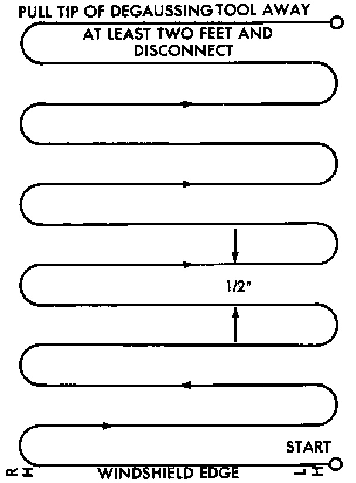

Compass Demagnetizing
A degaussing tool (Special Tool 6029) is used to demagnetize, or degauss, the overhead console forward mounting screw and the roof panel. Equivalent units must be rated as continuous duty for 110/115 Volts and 60 Hz. They must also have a field strength of over 350 gauss at 7 millimeters (0.25 inch) beyond the tip of the probe.To demagnetize the roof panel and the overhead console forward mounting screw, proceed as follows:
1. Be certain the ignition switch is in the Off position, before you begin the demagnetizing procedure.
2. Plug in the degaussing tool, while keeping the tool at least 61 centimeters (2 feet) away from the compass unit.
3. Slowly approach the head of the overhead console forward mounting screw with the degaussing toot plugged in.
4. Contact the head of the screw with the plastic coated tip of the degaussing tool for about two seconds.
5. With the degaussing tool still energized, slowly back it away from the screw. When the tip of the tool is at least 61 centimeters (2 feet) from the screw head, unplug the tool.
Roof Demagnetizing Pattern:

6. Place a piece of paper approximately 22 by 28 centimeters (8.5 by 11 inches), oriented on the vehicle lengthwise from front to rear, on the center line of the roof at the windshield header. The purpose of the paper is to protect the roof panel from scratches, and to define the area to be demagnetized.
7. Plug in the degaussing tool, while keeping the tool at least 61 centimeters (2 feet) away from the compass unit.
8. Slowly approach the center line of the roof panel at the windshield header, with the degaussing tool plugged in.
9. Contact the roof panel with the plastic coated tip of the degaussing tool. Be sure the template is in place to avoid scratching the roof panel. Using a slow, back-and-forth sweeping motion, and allowing 13 millimeters (0.50 inch) between passes, move the tool at least 11 centimeters (4 inches) to each side of the roof center line, and 28 centimeters (11 inches) back from the windshield header.
10. With the degaussing tool still energized, slowly back it away from the roof panel. When the tip of the tool is at least 61 centimeters (2 feet) from the roof panel, unplug the tool.
11. Calibrate the compass and adjust the compass variance as described.